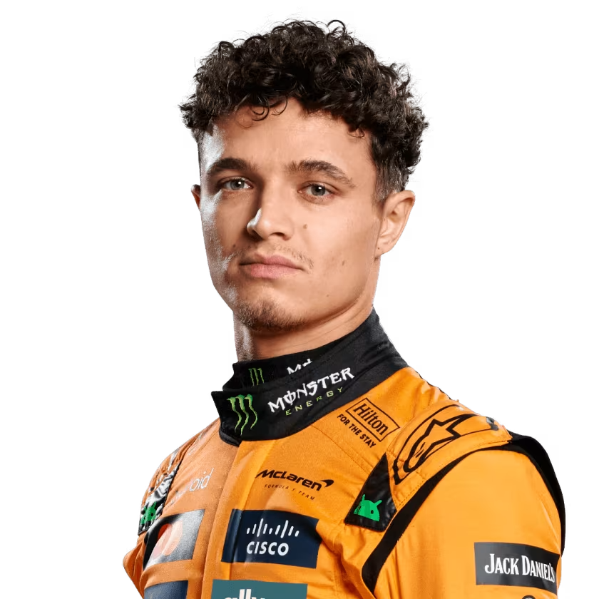
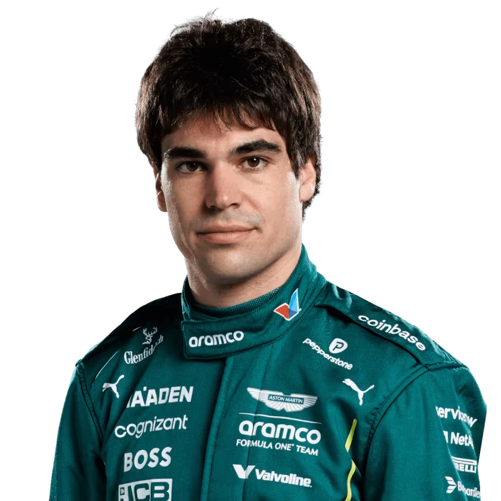
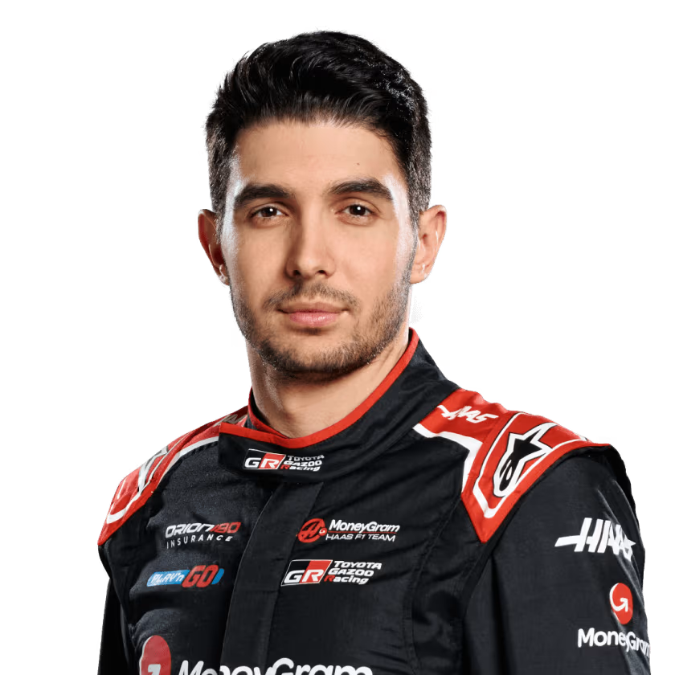

¿Qué es un piloto de Fórmula 1?
Los pilotos de Fórmula 1 son los protagonistas de cada carrera. Ellos conducen los autos más rápidos y avanzados del mundo, enfrentando grandes desafíos físicos y mentales. Cada piloto pertenece a un equipo y compite por sumar puntos en el campeonato mundial.
En esta sección conocerás a los pilotos de la temporada 2025, sus equipos y una breve descripción de su trayectoria. Si eres nuevo en la F1, te ayudará a identificar a los principales nombres y entender su importancia en cada Gran Premio.
Scuderia ferrari
Charles Leclerc Ferrari

Monegasco, líder de Ferrari, rápido y consistente.
Debut F1: 2018 | Victorias: 5 | Estilo: Muy fuerte en clasificación.
Lewis Hamilton Ferrari

Británico, siete veces campeón mundial, llega desde Mercedes.
Debut F1: 2007 | Victorias: 107 | Dato: Piloto con más poles en la historia.
RedBull
Max Verstappen Red Bull Racing

Múltiple campeón mundial, referente de Red Bull.
Debut F1: 2015 | Victorias: 67 | Dato: Campeón más joven de la historia.
Yuki Tsunoda Red Bull Racing

Japonés, ascendido desde RB, rápido y agresivo.
Debut F1: 2021 | Victorias: 0 | Estilo: Muy agresivo y veloz en carrera.
Mercedes-AMG
George Russell Mercedes-AMG

Británico, joven talento y líder en Mercedes.
Debut F1: 2019 | Victorias: 1 | Dato: Destaca por su constancia y trabajo en equipo.
Andrea Kimi Antonelli Mercedes-AMG

Italiano, debutante en 2025, gran promesa de la F1.
Debut F1: 2025 | Victorias: 0 | Dato: Considerado el joven más prometedor de Italia.
McLaren
Lando Norris McLaren
Británico, pieza clave en el resurgimiento de McLaren.
Debut F1: 2019 | Victorias: 9 | Estilo: Muy rápido y consistente, gran sentido del humor.
Oscar Piastri McLaren

Australiano, joven y rápido, consolidado en McLaren.
Debut F1: 2023 | Victorias: 8 | Dato: Campeón de F2 antes de llegar a F1.
Aston Martin
Fernando Alonso Aston Martin

Español, dos veces campeón mundial, experiencia y competitividad.
Lance Stroll Aston Martin
Canadiense, constante y con experiencia en la zona de puntos.
Debut F1: 2017 | Victorias: 0 | Dato: Ha subido al podio varias veces.
Alpine
Pierre Gasly Alpine

Francés, ganador de carreras, rápido y competitivo.
Debut F1: 2017 | Victorias: 1 | Dato: Ganó con AlphaTauri en Monza 2020.
Franco Colapinto Alpine

Argentino, debutante en 2025.
Debut F1: 2025 | Victorias: 0 | Dato: Primer argentino en F1 desde 2001.
Williams
Alex Albon Williams

Tailandés-británico, destaca por su habilidad y rendimiento en Williams.
Debut F1: 2019 | Victorias: 0 | Dato: Ha logrado podios con Red Bull.
Carlos Sainz Williams

Español, llega tras salir de Ferrari, experiencia y velocidad.
Debut F1: 2015 | Victorias: 2 | Dato: Ganó con Ferrari en Silverstone y Singapur.
Stake F1 Team / Audi
Nico Hülkenberg Stake F1 Team / Audi

Alemán, confirmado para la transición a Audi, experimentado y constante.
Debut F1: 2010 | Victorias: 0 | Dato: Pole position en Brasil 2010, nunca ha subido al podio.
Gabriel Bortoleto Stake F1 Team / Audi

Brasileño, joven promesa, listo para debutar en la F1.
Debut F1: 2025 | Victorias: 0 | Dato: Campeón de F3 antes de llegar a F1.
RB
Liam Lawson RB (ex AlphaTauri)

Neozelandés, ocupará asiento tras salida de Tsunoda, joven y prometedor.
Debut F1: 2023 | Victorias: 0 | Dato: Impresionó en sustituciones con AlphaTauri.
Isack Hadjar RB (ex AlphaTauri)

Francés, rookie en 2025, gran futuro por delante.
Debut F1: 2025 | Victorias: 0 | Dato: Joven talento francés, destacado en F2.
Haas
Oliver Bearman Haas

Británico, rookie en 2025, joven talento de Haas.
Debut F1: 2025 | Victorias: 0 | Dato: Debutó joven, ganador en F2.
Esteban Ocon Haas
Francés, llega tras salir de Alpine, experiencia y solidez.
Debut F1: 2016 | Victorias: 1 | Dato: Ganó con Alpine en Hungría 2021.